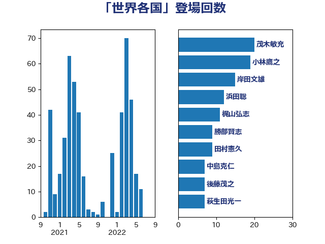

単語「世界各国」

| 茂木敏充 | 自由民主党 | 20 回 |
| 小林鷹之 | 自由民主党 | 19 回 |
| 岸田文雄 | 自由民主党 | 15 回 |
| 浜田聡 | NHK党 | 12 回 |
| 梶山弘志 | 自由民主党 | 11 回 |
| 勝部賢志 | 立憲民主党 | 9 回 |
| 田村憲久 | 自由民主党 | 9 回 |
| 中島克仁 | 立憲民主党 | 7 回 |
| 後藤茂之 | 自由民主党 | 7 回 |
| 萩生田光一 | 自由民主党 | 7 回 |
| 小西洋之 | 立憲民主党 | 6 回 |
| 小泉進次郎 | 自由民主党 | 5 回 |
| 工藤彰三 | 自由民主党 | 5 回 |
| 柳ヶ瀬裕文 | 日本維新の会 | 5 回 |
| 浦野靖人 | 日本維新の会 | 5 回 |
| 鈴木俊一 | 自由民主党 | 5 回 |
| 音喜多駿 | 日本維新の会 | 5 回 |
| 川田龍平 | 立憲民主党 | 4 回 |
| 林芳正 | 自由民主党 | 4 回 |
| 浅野哲 | 国民民主党 | 4 回 |
| 礒崎哲史 | 国民民主党 | 4 回 |
| 足立敏之 | 自由民主党 | 4 回 |
| 尾身朝子 | 自由民主党 | 3 回 |
| 島村大 | 自由民主党 | 3 回 |
| 有村治子 | 自由民主党 | 3 回 |
| 藤田文武 | 日本維新の会 | 3 回 |
| ながえ孝子 | 無所属 | 2 回 |
| 上川陽子 | 自由民主党 | 2 回 |
| 中川宏昌 | 公明党 | 2 回 |
| 中野洋昌 | 公明党 | 2 回 |
| 丹羽秀樹 | 自由民主党 | 2 回 |
| 勝俣孝明 | 自由民主党 | 2 回 |
| 吉良州司 | 無所属 | 2 回 |
| 和田政宗 | 自由民主党 | 2 回 |
| 大島敦 | 立憲民主党 | 2 回 |
| 小野田紀美 | 自由民主党 | 2 回 |
| 山口壯 | 自由民主党 | 2 回 |
| 山口晋 | 自由民主党 | 2 回 |
| 山本博司 | 公明党 | 2 回 |
| 岩谷良平 | 日本維新の会 | 2 回 |
| 平将明 | 自由民主党 | 2 回 |
| 後藤祐一 | 立憲民主党 | 2 回 |
| 徳永久志 | 立憲民主党 | 2 回 |
| 末松信介 | 自由民主党 | 2 回 |
| 枝野幸男 | 立憲民主党 | 2 回 |
| 橋本聖子 | 無所属 | 2 回 |
| 水岡俊一 | 立憲民主党 | 2 回 |
| 沢田良 | 日本維新の会 | 2 回 |
| 泉田裕彦 | 自由民主党 | 2 回 |
| 滝沢求 | 自由民主党 | 2 回 |
| 牧山ひろえ | 立憲民主党 | 2 回 |
| 甘利明 | 自由民主党 | 2 回 |
| 田村貴昭 | 日本共産党 | 2 回 |
| 稲津久 | 公明党 | 2 回 |
| 竹内譲 | 公明党 | 2 回 |
| 竹谷とし子 | 公明党 | 2 回 |
| 美延映夫 | 日本維新の会 | 2 回 |
| 菅義偉 | 自由民主党 | 2 回 |
| 谷田川元 | 立憲民主党 | 2 回 |
| 遠藤敬 | 日本維新の会 | 2 回 |
| 野上浩太郎 | 自由民主党 | 2 回 |
| 額賀福志郎 | 自由民主党 | 2 回 |
| 馬場雄基 | 立憲民主党 | 2 回 |
| 三浦信祐 | 公明党 | 1 回 |
| 世耕弘成 | 自由民主党 | 1 回 |
| 丸川珠代 | 自由民主党 | 1 回 |
| 井上哲士 | 日本共産党 | 1 回 |
| 今井絵理子 | 自由民主党 | 1 回 |
| 伊藤孝恵 | 国民民主党 | 1 回 |
| 伊藤渉 | 公明党 | 1 回 |
| 伴野豊 | 立憲民主党 | 1 回 |
| 佐々木さやか | 公明党 | 1 回 |
| 佐藤啓 | 自由民主党 | 1 回 |
| 加藤鮎子 | 自由民主党 | 1 回 |
| 北側一雄 | 公明党 | 1 回 |
| 古賀之士 | 立憲民主党 | 1 回 |
| 吉田忠智 | 立憲民主党 | 1 回 |
| 吉田統彦 | 立憲民主党 | 1 回 |
| 嘉田由紀子 | 無所属 | 1 回 |
| 土屋品子 | 自由民主党 | 1 回 |
| 塩崎彰久 | 自由民主党 | 1 回 |
| 塩村あやか | 立憲民主党 | 1 回 |
| 塩田博昭 | 公明党 | 1 回 |
| 大串博志 | 立憲民主党 | 1 回 |
| 大西健介 | 立憲民主党 | 1 回 |
| 大野泰正 | 自由民主党 | 1 回 |
| 安達澄 | 無所属 | 1 回 |
| 宮内秀樹 | 自由民主党 | 1 回 |
| 宮本徹 | 日本共産党 | 1 回 |
| 小寺裕雄 | 自由民主党 | 1 回 |
| 小森卓郎 | 自由民主党 | 1 回 |
| 小池晃 | 日本共産党 | 1 回 |
| 小熊慎司 | 立憲民主党 | 1 回 |
| 山口那津男 | 公明党 | 1 回 |
| 山崎正恭 | 公明党 | 1 回 |
| 山田賢司 | 自由民主党 | 1 回 |
| 山谷えり子 | 自由民主党 | 1 回 |
| 岡本三成 | 公明党 | 1 回 |
| 岸信夫 | 自由民主党 | 1 回 |
| 平井卓也 | 自由民主党 | 1 回 |
| 平沢勝栄 | 自由民主党 | 1 回 |
| 徳永エリ | 立憲民主党 | 1 回 |
| 打越さく良 | 立憲民主党 | 1 回 |
| 斎藤アレックス | 国民民主党 | 1 回 |
| 杉田水脈 | 自由民主党 | 1 回 |
| 松山政司 | 自由民主党 | 1 回 |
| 松川るい | 自由民主党 | 1 回 |
| 松野博一 | 自由民主党 | 1 回 |
| 柚木道義 | 立憲民主党 | 1 回 |
| 梅村聡 | 日本維新の会 | 1 回 |
| 森屋宏 | 自由民主党 | 1 回 |
| 横山信一 | 公明党 | 1 回 |
| 武村展英 | 自由民主党 | 1 回 |
| 河野義博 | 公明党 | 1 回 |
| 泉健太 | 立憲民主党 | 1 回 |
| 津島淳 | 自由民主党 | 1 回 |
| 浅田均 | 日本維新の会 | 1 回 |
| 浜口誠 | 国民民主党 | 1 回 |
| 渡辺周 | 立憲民主党 | 1 回 |
| 渡辺猛之 | 自由民主党 | 1 回 |
| 湯原俊二 | 立憲民主党 | 1 回 |
| 漆間譲司 | 日本維新の会 | 1 回 |
| 田中健 | 国民民主党 | 1 回 |
| 田名部匡代 | 立憲民主党 | 1 回 |
| 石井啓一 | 公明党 | 1 回 |
| 石井浩郎 | 自由民主党 | 1 回 |
| 石井章 | 日本維新の会 | 1 回 |
| 石川大我 | 立憲民主党 | 1 回 |
| 石川昭政 | 自由民主党 | 1 回 |
| 福山哲郎 | 立憲民主党 | 1 回 |
| 福岡資麿 | 自由民主党 | 1 回 |
| 福島みずほ | 社会民主党 | 1 回 |
| 緑川貴士 | 立憲民主党 | 1 回 |
| 羽田次郎 | 立憲民主党 | 1 回 |
| 舟山康江 | 国民民主党 | 1 回 |
| 舩後靖彦 | れいわ新選組 | 1 回 |
| 若宮健嗣 | 自由民主党 | 1 回 |
| 落合貴之 | 立憲民主党 | 1 回 |
| 藤川政人 | 自由民主党 | 1 回 |
| 赤嶺政賢 | 日本共産党 | 1 回 |
| 足立康史 | 日本維新の会 | 1 回 |
| 道下大樹 | 立憲民主党 | 1 回 |
| 野田佳彦 | 立憲民主党 | 1 回 |
| 野間健 | 立憲民主党 | 1 回 |
| 金子恭之 | 自由民主党 | 1 回 |
| 金子恵美 | 立憲民主党 | 1 回 |
| 鈴木宗男 | 日本維新の会 | 1 回 |
| 鈴木敦 | 国民民主党 | 1 回 |
| 長妻昭 | 立憲民主党 | 1 回 |
| 関芳弘 | 自由民主党 | 1 回 |
| 阿部知子 | 立憲民主党 | 1 回 |
| 鷲尾英一郎 | 自由民主党 | 1 回 |